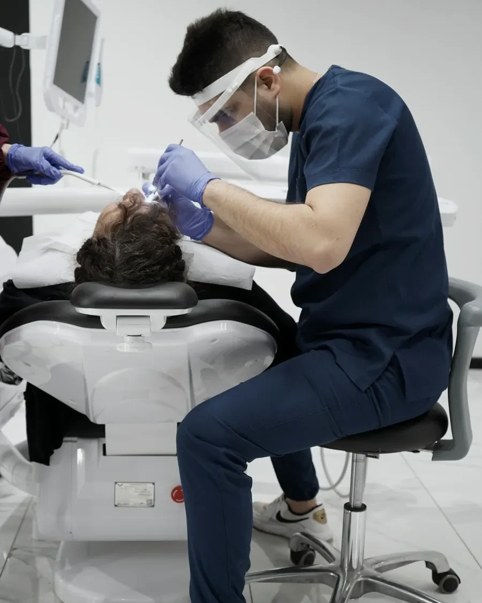

Професійне очищення доповнює щоденний догляд за зубами. Частоту процедур визначають після огляду.
Що таке професійна гігієна
Це видалення м’якого нальоту та зубного каменю, які накопичуються на зубах. Під час прийому також оцінюють стан ясен і пояснюють, як очищати зуби та проміжки між ними вдома.
Коли потрібен огляд
Якщо помітні відкладення, ясна кровоточать або щоденне чищення викликає труднощі. Кровоточивість може бути ознакою захворювання ясен: у такому разі одного очищення може бути недостатньо.
Як проходить процедура
Після огляду фахівець підбирає спосіб очищення та видаляє відкладення. За потреби полірує поверхні зубів. Наприкінці рекомендує щітку, пасту й засоби для очищення міжзубних проміжків.
Від чого залежать час і вартість
Від кількості відкладень, стану ясен і обсягу очищення. Якщо потрібне лікування ясен, його планують окремо. Орієнтовний час прийому й перелік процедур варто уточнити заздалегідь.
Що обговорити перед очищенням
Повідомте про чутливість зубів, імплантати, брекети, захворювання та ліки. Запитайте про можливі відчуття після процедури, домашній догляд і термін наступного огляду. Після очищення іноді виникає тимчасова чутливість.